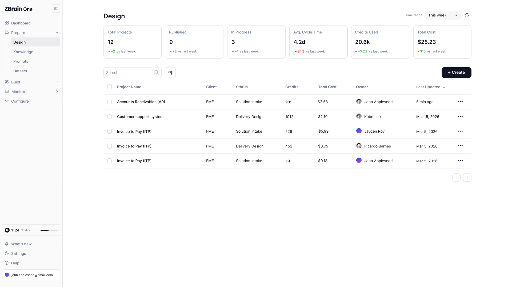
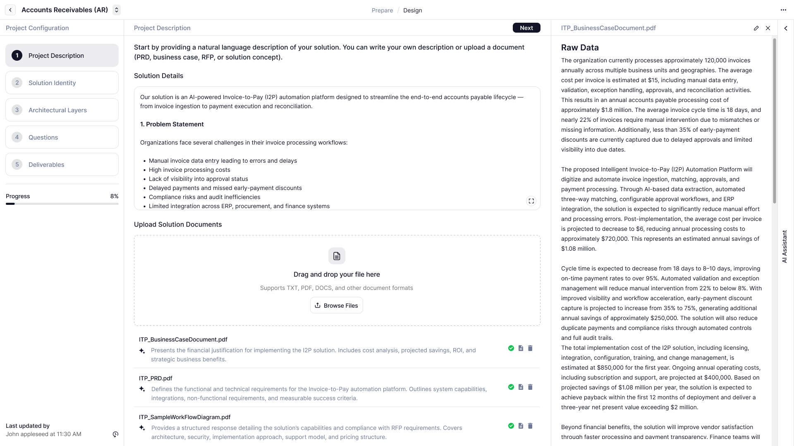
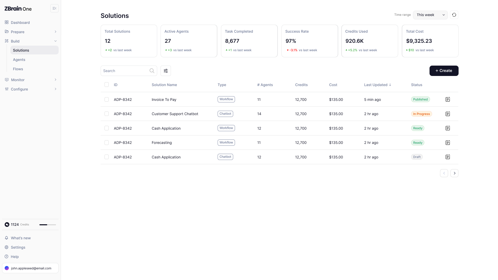
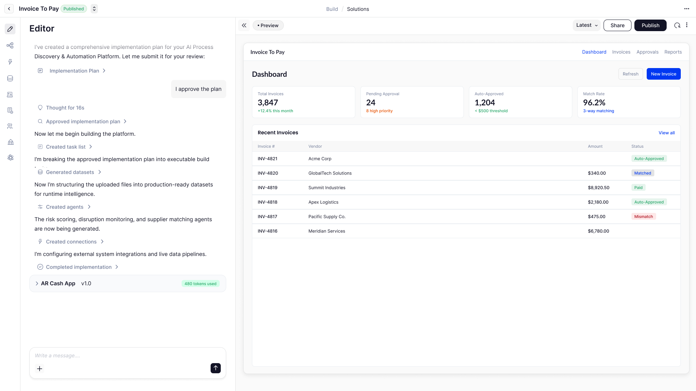
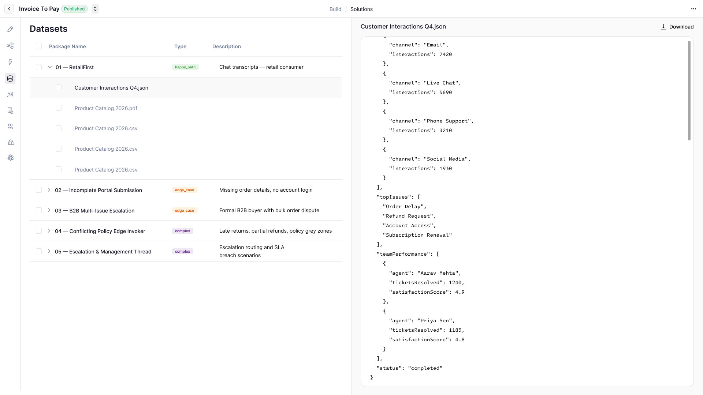
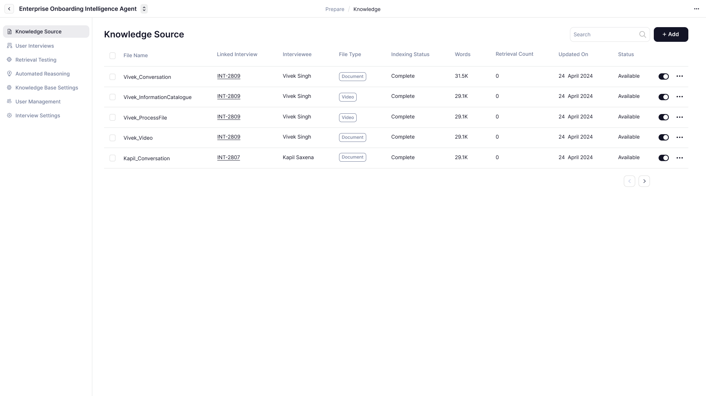
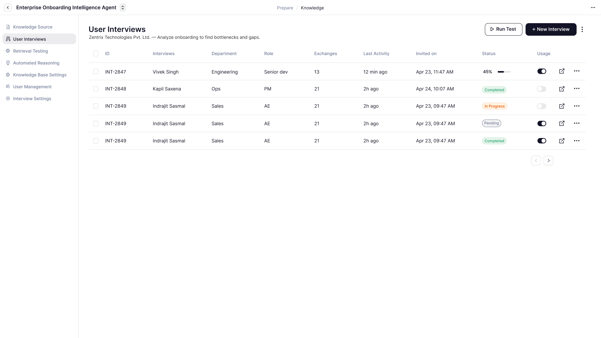
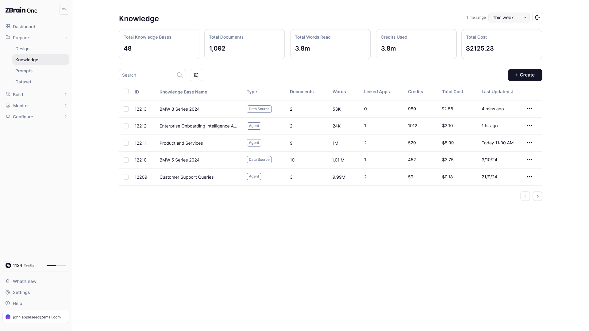
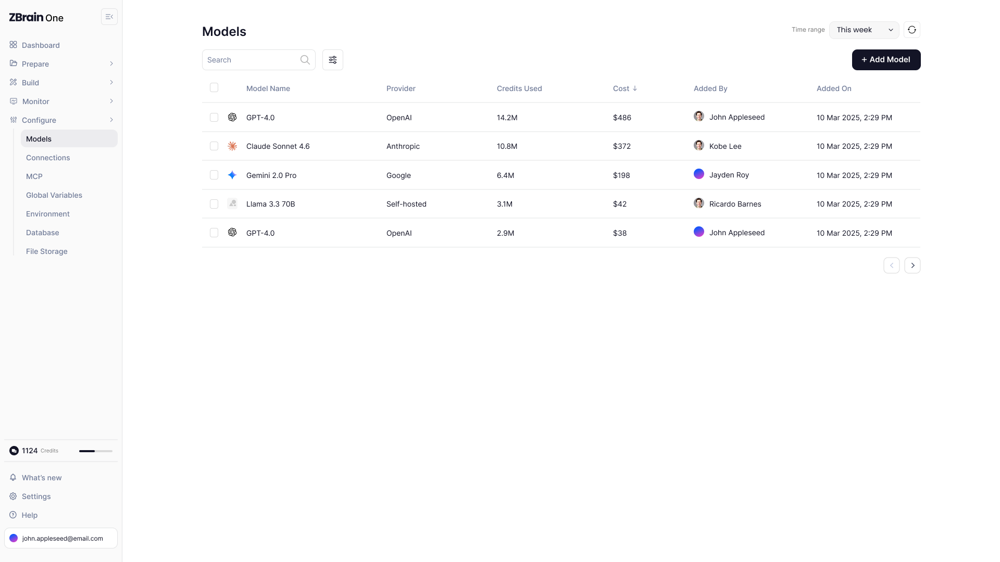

ZBrain One
the next ZBrain, being built now
The ground-up redesign of ZBrain - where organisations turn data into semantic knowledge and agentic solutions. An ops-first dashboard, a guided design flow, and a conversational build that generates working solutions.

01 / Requirement
ZBrain outgrew
its interface
As teams shipped more agents, flows and solutions, the platform that made them was working harder than the interface around it. ZBrain One is the redesign that catches up.
"The engine got far more powerful. The interface needed to stop making people hunt for what mattered."- Product team, ZBrain
The old interface asked people to go looking - for the failing integration, the next step, where everything lived. The power was there; the path through it wasn't.
The redesign's point of view: surface what needs attention, guide the design, let the platform build.
01.Lead with what matters
Open on a plain-language read of the workspace and a ranked list of what needs handling - not a wall of charts.
02.Make solution design a path
Turn "build a solution" into a guided flow, from a description and your documents to an approved plan.
03.Let the platform build
Let AI take an approved plan and generate the datasets, agents and connections - with a live preview.
02 / Approach
Principles for
the redesign
Rather than restyle the old screens, the redesign starts from how an AI-native platform should feel to run.
Core modules
Prepare, Build, Monitor and Configure, rebuilt around one clear spine.
Dashboard
Health, cost and a ranked "action needed" list before anything else.
Build
A conversational editor that turns an approved plan into a running solution.
An AI platform should feel like something you operate, not something you assemble. The dashboard tells you what's wrong; design feels like a conversation; the build is something you approve.
Nothing gets stranded - AR, Invoice-to-Pay and every existing solution carry forward unchanged.
Ops-first, not chart-first
The home screen summarises and prioritises - a ranked action list, not a dashboard you have to read.
AI does more of the work
From reading your business docs to generating agents, the platform builds alongside you.
One clear spine
Prepare, Build, Monitor, Configure - a single mental model from idea to running solution.
Continuity of work
Every existing solution moves into the new interface unchanged - a redesign, not a reset.
03 / User Flow
Idea to running
solution
The new spine: describe it in Prepare, let Build generate it, then run and watch it from the dashboard.
The solution lifecycle in ZBrain One
The design and the build are increasingly the platform's job; the human describes, approves and monitors.
04 / Product Tour
A walk through
the new interface
Work in progress - the dashboard, the Prepare design flow, and the conversational Build that generates a running solution.
An ops-first home
The dashboard opens on what the workspace is doing, and what needs a human.
Read the workspace in a sentence
A plain-language read of performance, cost and throughput - and a ranked "Action Needed" list that says what to fix first.
- Performance, cost and throughput with status
- Sessions charted by agents, flows and solutions
- Ranked action list - handle top to bottom
Designing a solution, guided
A workspace for solution-design projects, and a step-by-step flow where the AI reads your documents.

Every solution in flight
Every solution being shaped - client, stage, owner and spend - under portfolio-level cycle-time and cost trends.
- Portfolio of solution-design projects
- Stage, owner, credits and cost per project
- Cycle-time and cost trends up top

Describe it; the AI reads the rest
Write it in plain language or drop in a PRD - an AI assistant extracts the requirement in real time.
- Step-by-step project configuration
- Upload a PRD, RFP or business case
- AI assistant reads the raw data alongside you
The platform builds it
The solutions library, the conversational editor that generates a running app, and the datasets behind it.

Agents, flows and whole solutions
Every solution with its agents, cost and status - over rollups for active agents, tasks and success rate.
- Solutions by type, agents, cost and status
- Agents and flows as their own libraries
- Active-agent and success-rate rollups

Approve a plan; watch it get built
The AI drafts a plan; once approved, it builds the datasets, agents and connections - streaming a live preview beside the chat.
- AI plan → approve → generated solution
- Datasets, agents and connections built for you
- Live preview of the running app, then publish

The data behind the build
Files become production-ready dataset packages - happy-path, edge-case and complex - inspectable row by row.
- Packaged datasets by scenario type
- Inline JSON preview per file
- Structured for runtime intelligence and testing
Knowledge behind it all
The knowledge sources and interview capture that feed a solution's semantic layer.




05 / Where it's heading
Shipping now,
module by module
ZBrain One is being rolled out as the new home for the platform - not a rewrite of what works, but a redesign of how you move through it.
Dashboard
Summarised, prioritised and ranked - live in the new shell.
Prepare
Solution design as a flow that reads your documents.
Build
Approve a plan and let the platform generate the solution.
In flight now: the dashboard, the Prepare design flows, and the Build library with its conversational editor - one navigation, one visual language.
Keep everything ZBrain builds; change how it feels to build it.
"Same brain, new body - the platform finally feels as capable as it already was."- Indrajit, Senior UI/UX Designer
ZBrain One is a LeewayHertz product in active development. Screens are work in progress; figures and quotes are illustrative.
ZBrain Governance
Policy, guardrails and trust for agentic AI across an organisation.